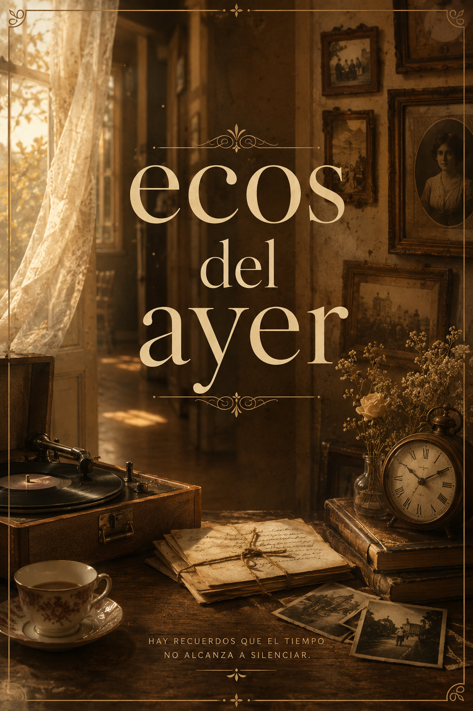
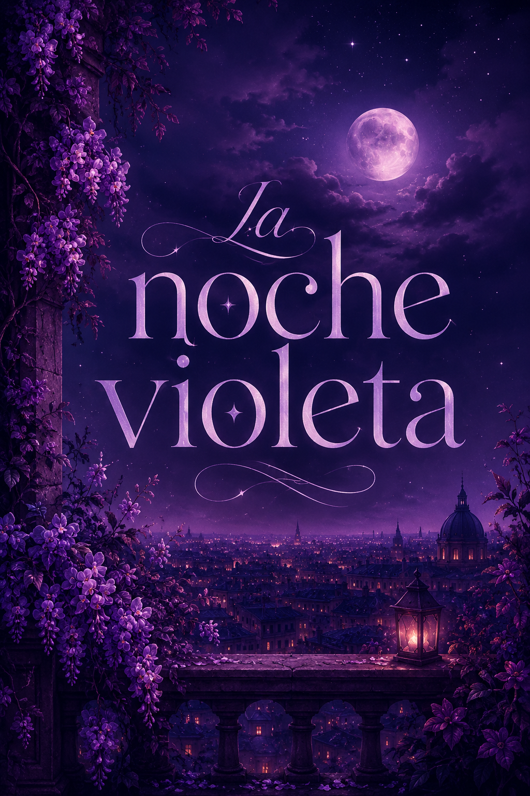

Luz de octubre
El reloj marcó la medianoche cuando Clara abrió la carta. No sabía que esas palabras cambiarían su destino para siempre.
Descubre nuevas historias, autores y lecturas recomendadas por la comunidad.
El reloj marcó la medianoche cuando Clara abrió la carta. No sabía que esas palabras cambiarían su destino para siempre.


Tras heredar una antigua casa junto a un lago olvidado, una joven descubre que las aguas esconden secretos capaces de alterar la realidad...

Una extraña tormenta tiñe el cielo de violeta y cambia el destino de la humanidad. Un grupo de jóvenes emprende un viaje a través...

En un pequeño vecindario marcado por los cambios de una época inolvidable, dos adolescentes descubren que el amor puede florecer...

Los habitantes del pueblo siempre evitaron internarse en el antiguo bosque. Cuando una serie de desapariciones rompe la tranquilidad...